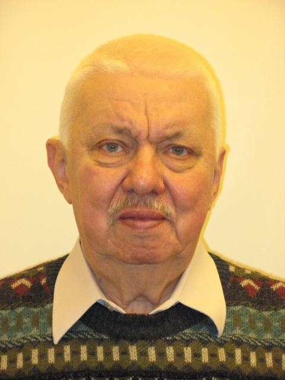

E-mail:
kovalev@ilt.kharkov.ua
Tel. +38 (057) 340 21 05.

Was born in Ulan-Ude (USSR) in 1945.
Graduated from KharkovGraduated from Kharkov State University
in1967.
PhD Phys & Math, Kharkov State University, 1975
DrS Phys&Math, ILTPE NANU,1989
Professor degrees in Theoretical physics in ILTPE, 2001.
Now is the Leading Researcher in ILTPE (theoretical department) and
the professor in Kharkov National University (E.M.Lifshits
theoretical physics department).
Area of expertise is the nonlinear waves and soliton dynamics
of magnetically ordered and elastic media, nonlinear phenomena in
dynamical systems, mathematical aspects of nonlinear mechanics. Is
the author and co-author of 2 monographs, 4 reviews and 200
articles.
Lecturer activity: lecturing on theoretical mechanics and
nonlinear physics at Kharkov National University.
Foreign activity: scientific visitor in universities of
Regensburg, Bayreuth (Germany), Paris (France), Canberra
(Australia), Birmingham (UK) and Linchoping (Sweden) during the
years 1994-2004.
Scientific adviser of 6 PhDs.
Avards: Ukrainian A.S.Davydov award in theoretical physics
(2006), Letter of commendation from Ukrainian parliament (2010),
Ukrainian State award (2012) and decoration of NAS of Ukraine
(2018).
Main current research interests:
theory of nonlinear structures and waves in solid state.
-
Investigation of nonlinear surface waves during last years includes
studying of nonlinear surface shear waves (It was demonstrated the
importance of a spatial dispersion of elastic media and criteria of
stability for NSSW and surface shear solitons were formulated); the
SSS were studied as a general problem of 2D and 3D solitons in media
with acoustic spectrum and the special asyptotical procedures for
them were proposed; the different surface Rayleigh solitons with a
stationary profile were investigated near perfect surface and
surface covered with thin film or monolayer. In the last cases the
nonlinear non-local ID evolution equations were derived and their
unusual soliton solutions were obtained. Recently some special
problems for nonlinear elastic surface waves were investigated:
propagation of envelope SRS, properties of "gap" SRS near the
corrugated surface, propagation of exotic solitons with combined
polarization in nonlinear elastic plates with effective nonlinear
dispersion, derivation of nonlinear evolution equations for
nonlinear elastic systems with restricted geometry and second-order
nonlinearity. Some results were obtained for nonlinear elastic waves
and solitons near the surface in the incommensurate state.
-
Nonlinear dynamics of magnets is a traditional field of interest:
the specific nonlinear excitations - "magnetic solitons" were
studying and the novel conception of magnetic soliton as a bound
state of magnons was formulated. In this area some important results
were obtained: the exact solutions for ID solitons in ferro- and
anti-feromagnets; exact many-solitons solutions in ID FM; numerical
solutions for many-dimensional magnetic solitons; 2D skirmions and
vortices in FM. Later some specific phenomena of nonlinear magnetic
structure and dynamics was investigated: magnetic solitons in thin
films and nonlinear surface spin waves, magnetic frustrations in
HTSC, complicated topological solitons in AFM with dislocations,
dynamical and topological solitons and internal modes in quasi 2D
essentially discrete FM, exotic magnetic solitons, magnetic
structure and dynamics of FM/AFM perfect and imperfect interfaces
(especially exchange bias phenomenon). Recently the main interests
are concentrated on the structure and dynamics of magnetic vortices,
vortex pairs and their interaction with spin waves and external
fields, magnetic vortices in magnetic nanodots, magnetic solitons
interaction with the point sources of external high frequency field.
-
Special problems of nonlinear mechanic and mathematical aspects of
solitonic theory were studied including: some asymptotic techniques
for envelope solitons in ID- 2D- and finite size systems; Hirota
transformation, N-solitons solutions and spin-wave spectrum in the
presence of domain walls; exact solutions for incommensurated
systems; the connection of solitons in the systems with distributed
parameters with their quasi-soliton analogous in the systems with
finite number degrees of freedom. Recently some problems of
nonlinear optical pulse propagation in fibers were intensively
studied. Another "optical activity" is connected with propagation of
nonlinear optical beams through spatial periodic media and
properties of optical "supersolitons”. The particular attention is
devoted to investigation of "gap-solitons" and their discrete
analogs.
Main publications:
-
A.M.Kosevich, B.A.Ivanov, A.S.Kovalev, Nonlinear waves of
magnetization. Dynamical and topological solitons, Kiev, Naukova
Dumka (1983).
-
A.M.Kosevich, B.A.Ivanov, A.S.Kovalev, Magnetic solitons: A new type
of collective excitations in magnetically ordered systems,
Sov.Sci.Rev., A6,161-260 (1985).
-
A.M.Kosevich, B.A.Ivanov, A.S.Kovalev, Magnetic solitons, Phys.Rep.,
v.194, N3/4, 117-238 (1990).
-
A.M.Kosevich, A.S.Kovalev, Introduction in nonlinear physical
mechanics, Kiev, Naukova dumka (1989).
-
M.Pankratova, A.Kovalev, M.Zukovic, Understanding of Exchange Bias
in ferromagnetic/antiferromagnetic bilayers, in “Exchange
Bias”, Monograph Series in Physical Sciences, Taylor&Frances, CRC
Press, 205-232 (2017).
Main last publications:
-
А.С.Ковалев, «Вихревая структура магнитных солитонов», ФНТ, т.43,
№2, 364 (2017).
-
A.S.Kovalev, M.L.Pankratova, “Field dependence of magnetization for
thin ferromagnetic film on rough antiferromagnetic surface”,
Superlattices and Microstructures, v.73, 275 (2014).
-
А.Г.Гречнев, А.С.Ковалев, М.Л.Панкратова, «Влияние обменного сдвига
на гистерезис полевой зависимости намагниченности ферромагнитной
пленки, контактирующей с антиферромагнетиком». ФНТ, т.39, №12, 1361
(2013).
-
E.S.Sokolova, A.P.Mayer, A.S.Kovalev, “Second-order nonlinearity of
wedge acoustic waves in anisotropic media”, Wave Motion, v.50, N2,
246 (2013).
-
E.S.Sokolova, R.Timler, A.S.Kovalev, A.P.Mayer, “On the dispersion
of wedge acoustic wave”, Wave Motion, v.50, N2, 233 (2013).
-
В.Н.Белан, А.С.Ковалев, А.А.Перетятько,«Влияние диссипации на
структуру квазисолитонных состояний при высокочастотном точечном
воздействии на нелинейные магнитоупорядоченные среды», ФНТ, т.39,
№2, 186 (2013).
-
S.A.Gredeskul, S.A.Derevyanko, A.S.Kovalev, J.E.Prilepsky, “ Soliton
propagation through a disordered system: Statistics of the
transmission delay”, Phys.Rev. E, v.81, N 3, 036608 (2010).